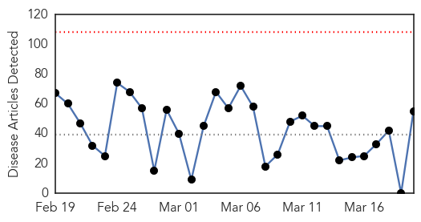
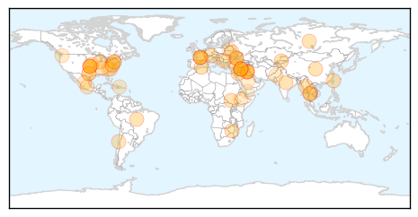

Pertussis
30-Day Web Trend
30-Day Twitter Trend
0 alerts, 0 warnings

Article Locations


Article Confidences

Top Articles:
-
No articles found for Mar 20, 2014
Top Tweets:
-
No tweets found for Mar 20, 2014
Unknown
30-Day Web Trend
0 alerts, 0 warnings

30-Day Twitter Trend
0 alerts, 0 warnings

Article Locations

Article Confidences

Top Articles:
- 0.917
- Chicago Tribune
- 0.917
- Chicago Tribune
- 0.917
- Chicago Tribune
- 0.917
- Chicago Tribune
- 0.917
- Chicago Tribune
- 0.910
- The world windows to Thailand
- 0.910
- The world windows to Thailand
- 0.910
- The world windows to Thailand
- 0.902
- Students laid low as virus hits
- 0.887
- HealthNewsDigest.com
- 0.885
- Tuberculosis Cases Increase In NYC For First Time In Decade
- 0.866
- News, Information and Connections for Action
- 0.866
- Russia says will not reconsider absorption of Crimea
- 0.866
- Obama announces expanded sanctions on Russians over Ukraine
- 0.866
- Russia tells U.N.'s Ban rights being violated in Ukraine
- 0.866
- A police helicopter drops water on a forest fire on Runstboden mountain in the western Austrian village of Absam
- 0.866
- First U.N. aid trucks cross from Turkey to Syria
- 0.866
- TABLE-Bulgaria's centre-right takes opinion poll lead before European vote
- 0.866
- U.N. chief Ban meets Putin, says "deeply concerned" over Ukraine
- 0.866
- South Sudanese youth watch a volleyball game at a camp for the displaced at the UN Mission in South Sudan (UNMISS) compound in Rumbek
- 0.866
- Two members of security forces killed in attack in southern Turkey
- 0.866
- Russian may be preparing further Ukraine incursion
- 0.866
- Russian may be preparing further Ukraine incursion
- 0.866
- Russia says no need for early repayment of Ukrainian bonds
- 0.866
- Russia will not bail out company owners as in 2008-2009-finance minister
- 0.866
- Crimean authorities release Ukraine's Navy commander
- 0.866
- Nine killed in train crash in southern Turkey
- 0.866
- Russia calls for release of Ukrainian navy chief in Crimea
- 0.866
- Indian villagers walk towards Mahan forest during protest against coal mining project in Singrauli district in central Indian state of Madhya Pradesh
- 0.839
- Tuberculosis in US hits record low, CDC reports
- 0.818
- Poor diagnosis driving global multidrug-resistant TB, WHO warns
- 0.818
- Antibiotic Resistant Infections in Children Increasing
- 0.817
- Tennessee Department of Health sees fewer Tuberculosis cases, but says case complexity on the rise
- 0.816
- Poor diagnosis driving global multidrug-resistant tuberculosis, WHO warns
- 0.811
- Poor diagnosis driving global multidrug-resistant TB, WHO warns
- 0.802
- Tuberculosis in U.S. Hits Record Low: CDC
- 0.778
- Poor diagnosis cause for global multidrug resistant TB
- 0.774
- Poor diagnosis driving global multidrug-resistant TB, says WHO
- 0.757
- Twitter More Accurate Than Google At Tracking The Flu
- 0.728
- Deadly pig virus numbers rise in U.S. hog herd
- 0.726
- Screening Immigrants For TB Pays Dividends In U.S.
- 0.704
- Early detection of childhood eye cancer doesn't always improve survival, prevent eye loss
- 0.692
- Gut bacteria can cause life-threatening infections in preterm babies
- 0.670
- Combination of oral, injectable polio vaccine used for first time in outbreak
- 0.661
- Gut bacteria put preterm babies at risk for sepsis
- 0.659
- Medical errors not confined to T&T alone
- 0.657
- NGO Tackles Leading Cause of Blindness, Trachoma
- 0.623
- Minor Plant Virus Hits Dominican Tobacco Fields
- 0.613
- TB keeps dropping in US, but unevenly
- 0.599
- 1 in 3 Patients with Bloodstream Infections Given Inappropriate Therapy
Showing top 50 articles...
Top Tweets:
-
No tweets found for Mar 20, 2014